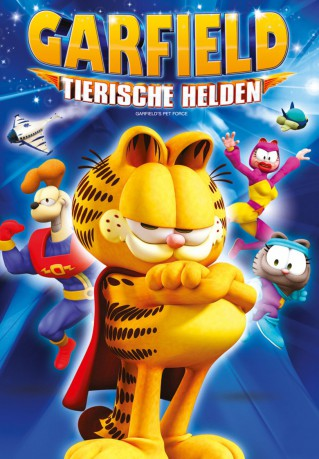

#859 Garfield - Tierische Helden
 
 IMDB-Wertung: 4.3 / 10
IMDB-Wertung: 4.3 / 10  Metascore: 0
Metascore: 0 
Garfield interessiert sich für nichts auf der Welt außer essen. Dies ändert sich aber als die Superkatze Garzooka aus der Welt der Comic-Bücher mit schrecklichen Neuigkeiten ankommt. Garfield bringt all seine Willensstärke auf und schließt sich Garzooka an um die ihre Welten zu retten.
Jahr: 2009
Dauer: 73 Minuten
FSK:
Land: Süd-Korea Studio: Blue Sky MediaTonspuren: DD5.1 - ,
Untertitel:
Auflösung: 1080p (1920x1040) Größe: 2816 MB
Genre: Animation/Trick, Action, Komödie, Familie, Sci-Fi
Regisseur: Mark A.Z. Dippé
Drehbuch: Jim Davis
Soundtrack: Kenneth Burgomaster
Darsteller:
Datei: X:\Kinder Collections\Garfield\Garfield - Tierische Helden (2009, FSK, 1920x1040).mkv seit 08.04.2015
Festplatte: Kinder-Filme+Trick
 Alle Filme aus Gruppe 'Kinder Collections\Garfield'
Alle Filme aus Gruppe 'Kinder Collections\Garfield'
- Garfield
- Garfield - Tierische Helden (der aktuelle Film)